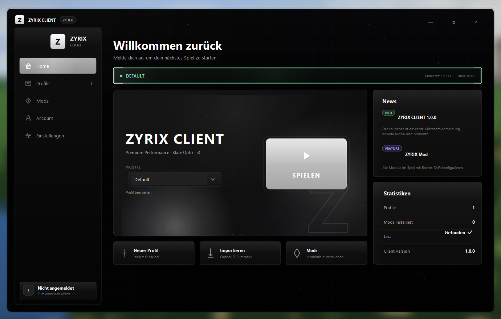

Microsoft-Anmeldung
Sicherer Device-Code-Login direkt bei Microsoft. Zugangsdaten bleiben dort, wo sie hingehören – der Client speichert nur das Token.
Der aufgeräumte Minecraft-Launcher für Fabric. Echte Microsoft-Anmeldung, isolierte Profile, Modrinth-Suche und ein schnelles In-Game-Menü – kostenlos, werbefrei und ohne Java-Installation.

Ein Launcher, der sich auf das Wesentliche konzentriert: schnell starten, sauber verwalten und im Spiel alles griffbereit haben.
Sicherer Device-Code-Login direkt bei Microsoft. Zugangsdaten bleiben dort, wo sie hingehören – der Client speichert nur das Token.
Jedes Profil bekommt eigene Welten, Mods und Einstellungen. Version und Loader legst du pro Profil fest – ohne Kreuzkontamination.
Mods suchen, filtern und mit einem Klick installieren. Abhängigkeiten und Kompatibilität bleiben dabei im Blick.
Bestehende Instanzen als ZIP oder Ordner übernehmen – mit geprüfter Staging-Struktur und Schutz gegen Pfad-Traversal.
Schlanke Oberfläche, gebündelte Java-Laufzeit und flüssige Animationen ohne unnötigen Ballast. Startet, wenn du es sagst.
Rechts-Shift öffnet das Client-Menü direkt im Spiel: Module, HUD und Einstellungen an einem Ort – nahtlos über Fabric.
Dunkle Karten, ruhige Akzente und alles Wichtige auf einen Blick. Klicke auf eine Aufnahme für die große Ansicht.
Lade ZYRIX CLIENT herunter, starte das Setup und melde dich mit deinem Microsoft-Konto an. Java, Fabric und die In-Game-Mod sind bereits enthalten.